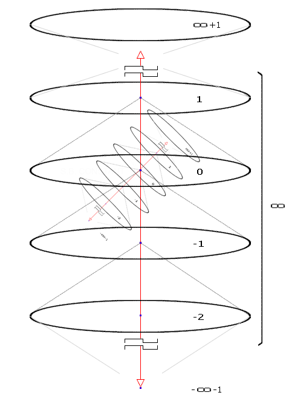

full contents of the book:
Nothing & Dot (Prolog)
Purpose
Contemplated
Entity
Consciousness
Two-Aspect (dualistic) Entity
Fourth dimension and ...
Society and Humanity
Fifth dimension and ...
Firstoccurence
Act of the “I”
The Proc.of study.the Act of "I"
The Meaning of Being
Development of Entity
The Collective Reality
the Entity Development System
Echo (Reflection)
Real Aspect of the Global I
About Worldview
Space-Time
Attitude toward Yourself
Attitude toward your body
Laziness
Fear
Hope (...for Miracle)
Adaptation
Identity of Personality
Relation [ Reason | Body ]
Free Will
Hard problem of Consciousness
Indistinguish and Identity
Matter
Gnoseology
Epistemology
Separation
to the home page
— Chapter Thirty-One —
————————————————————————————
————————————————————————————
–Why is there something and not nothing?
– Because there is “I” (and “He”);
–‘Nothing’ is thought of in relation to,
and yields to ‘something’, but a priori;
INDISTINCTIBILITY AND IDENTITY (OF THE OBJECTS)
We are familiar with the existing and Accepted Propositions of Objective Philosophy, but we observe not entirely unambiguous opinions on this matter. Here, as it should be (based on the Ultra-Idealistic structure of the World), we will apply our Own approach to the Widely Known Topic;
Everything has its time. It's necessary to outline the view of Philosophy as a Subject, Science (general Meaning, Essence), and Tasks that ‘go beyond’ ordinary practice and necessarily represent New methods of reasoning. Philosophy is the only science that is not concrete, immediate, and ready for use, even in aspects of logic, since it contains paradoxes and (or) internal contradictions, from which a Specialist, but already in a specific field of science, will discover something invaluable, and this will be precisely the “Method of Reasoning”. However, there is an exception to this, namely, the worldview turns out to be clear, precise knowledge (otherwise it is not). The idea of the structure of the World, many materialists think so, is not important at all - everything else is much more important, they say: - The Universe does not care what you think and what you hope for (It will be as it will be).
We believe that each person controls ‘His Own World’, since he is Its Cause, and the presence of a Worldview determines the quality of Management, when the World is used effectively, and for the purposes of development. This contradiction guides philosophy, but complete certainty seems more rational (than stereotypes?);
Unfortunately ;( it is no longer possible to find out all the examples and experiences, i.e. To what specifically, and How exactly, were “Those Famous” principles of comparison applied? (this would help). It is not known for certain, what goals exactly were pursued by researchers of the past. Let it not be important – we strive to “Give” only what we intend (but, from a certain position). In this aspect, we are no longer afraid of the “hindsight error” and try to participate in solving some current “problems”, which we consider ordinary “tasks”, however, as before, we will try to avoid any specific terms if possible (the reason is known). These are purely theoretical exercises, as we understand, but – if they are relevant, then the practice of research will be very useful. We propose to distinguish distinguish 'four groups in which experience is also extracted through the contemplated':
1. Things in Real Conditions – Ephemeral Objects;;
2. Ideas of “things” – ideal prototypes (Standards);
3. Mental images, or the study of constructions;
4. Inner images: Astral, Hypnotic, in a Dream, etc.
Things in real conditions – are ephemeral objects.. Group 1
Realizable, whatever, refers to a real event and has no definition of time, in this sense - the real (acts) does not have <the time-specific> extension, i.e. is not the future and the past, in fact. But we use the past - it can be reproduced from (and in) memory and is available for analysis, research, and the extraction of experience - contemplated as mental images and situations, therefore we will consider this when studying group 3, respectively;
The really contemplated (as if ‘flying away’, in the current mode, going into the past, and – in each specific state), is studied as dynamically changing, but in fact it is not, very simply proven by the sequence of static states. However, we cannot see each of the moments separately, since they are ephemeral. For the possibility of its contemplation, the object must “be continuous” therefore dynamics is necessary in the conditions of reality (… and reality itself);
Ideologically-static – we explain it this way: “Idea” is static in itself, it is simply used (as a subject - like some basic), and cannot change, however, according to the Conditions, ‘Its real-contemplated’ changes – usually called “Projection”, that is, it is Idea + Conditions corresponding to the Situation. Only the Idea is static here (and always, anywere), and the Conditions according to which the object changes are dynamic.
According to the Conditions, one Idea can transform into another. There are both reversible and irreversible transformations. Let's say some object, for example a piece of ice, is an Idea of Ice, but according to the Conditions, it (the ice) will melt turning into ordinary Water. The corresponding Conditions can affect the water turning it back into a piece of ice (or into Steam). Does the Condition affect the situation? :) -Of course not. The situation affects the Conditions - changing both the setting for the ability of the Entity to gain experience;
More precisely: "Entity" influences "Consciousness" in such a specific way that any Situation and in any case, is formed Uniquely, taking into account the potential possibility of extracting New experience. For this reason, there are no identical conditions, therefore - there can be no identities. This is a fundamental principle, the same according to which: "Development" is "Life";;
That is, we see a “dynamic frame” [ Idea of an object + Conditions for changing this object ];
The ideologically-static under any Conditions is only ‘its contemplated’, i.e. dynamic, and subject to change. A stone pillar, for example, will stand for several hundred thousand years. But, as an Idea – it is an ordinary pillar and according to the Conditions
The future that does not yet exist is absurd, but assumed as possible. It can be viewed, exclusively as somethig barefoot and wild in hypothetically possible shoes. The fantasy of a miracle, but it is beautiful, and incredibly interesting;
Let's conduct a simple and very clear experiment together and consider two drops of mercury. They are almost identical, but one is heavier than the other, by a thousandth of a milligram. They are close (look same), but one of them is lying on a warm glass, and the other on a cold one. Theoretically, we can assume that at some point both drops will become absolutely identical, because their evaporation rates will be different, and they will equalize in mass. This will indeed happen, but the drops, at the moment of exactly matching mass, will not be identical, since they will have different sizes (and degrees of expansion, at different temperatures). In addition, these drops will have different particle content, perhaps even a different number of atoms. The presence of several very compelling reasons allows us to assert the "impossibility of identities in reality." Although, of course, we have touched on this topic very superficially. Obviously, there will be other facts;
About indistinguishability we will say the following: It is possible to distinguish "things" only visually (this is literal), and obviously, therefore, in any conditions, "Their visible Sameness" is quite probable. Does not matter by what method we come to a conclusion about the degree of similarity, if it suits us, then we recognize it and accept it as a value satisfying certain requests. In practice, everyday indistinguishability of objects is used by people much more often than we encounter exact comparison when building Fault-Tolerant Systems and mechanisms, but even by chance, identity is absolutely impossible (perhaps therefore, according to the Conditions of Confinement - quarks cannot be single, that is, Independent);
Speaking about accuracy, when comparing, as well as when measuring machine parts – using the most advanced technologies (of the “ensuring accuracy”), we are dealing with conventionality and tolerance up to a certain value (this is called ‘error’, or –infelicity). In reality, it cannot be otherwise – we are dealing with dynamically melting Images, and this principle ensures the “Stability of the Universe”, since it is one of the factors of the Development of the Entity;
That is, we unequivocally assert that staticity, that is, 'the absence of dynamics and changes', contradicts the 'Eternal Development of the Entity', because it excludes the Condition for a potentially infinite number of variants of experience
If the researcher encounters identical objects, this is a sign to look for an error and continue research;
Ideas of "things", ideal prototypes, standards. Group 2
To this group we include not only Ideas, in their literally “Pure form” (anyone can verify this by contemplating anything in the mental space), but also numerous functions. Let us abstractly consider the “Function of the Electron”, for example. ‘They are everywhere’ - this, their contemplated illumination, or rather with their
Mental images, and study of mental constructions. Group 3
For a sophisticated researcher, this is a much more flexible analytical tool than actual reality, since it allows flexible control of contemplated images, and arbitrarily modeling any possible situations. But, the special value of the tool is that it allows analyzing the past, in the sense of what actually happened (in huge volume of experience), from which new experience can be extracted, not once or twice, but many times (we think almost everyone uses this great method);
We understand that mental images are also realized in space, but this space is somehow internal, in principle, that is how it is. Technically, this is a rather interesting construction:
Space in Space, we can create not one, but several controlled mental environments simulating situations, and periodically jump from one to another, studying what interests us and, if possible, assume our research with the help of an electron microscope, or an oscilloscope and even a synchrophasotron, then we will have to fantasize, invent, or assume the results and check again, and view the completed ones (…however, we will in no way prove “identity”);
Hypothetical results, in experimental (cage) mental spaces, are reliably isolated. They cannot be objective, and are not subject to collective synchronization, and most importantly, they (mental actions and results) cannot be reproduced, repeated, or retransmitted in the conditions of actual reality - associated with the experience and Development of the "Entity" at the Global level, although it is worth noting ‘some probable Exceptions’ (they are not related to the topic of “identities”) - in the mental space it is very convenient to train, develop techniques, methods of managing reality. Once again we will remind you that the content of films and books can clearly be realized. Everything, up to the most unusual and literally fantastic phenomena (having grounds). Consciousness and Entity are not limited by anything, there are no limits;

fig. 21 (‘internal, mental’, experiential space)
Images, astral, hypnotic and in dreams. Group 4
We have already found out that 'identities' are impossible because they block the extraction of new experience - this is a very dangerous threat to the World and Entity. But the tasks have been set and we are considering all the conditions under which the extraction of experience ‘here' is possible, especially contemplative. We have previously established that the 'Entity' leaves (disconnect) the body &/or periodically reads the wave of someone else's experience, or 'our wave in another reality', which we do not remember and do not know. However, we understand the logic of structure of the World, which cannot be different. It is also known that the Entity acts impeccably and if it creates anything (an Idea), then this is carried out with an infinite degree of quality. Even assuming a Parallel World – It is structured according to the same principles as Our World (if this supposed one is not some kind of “Matrix” – where development is not important, therefore "It" is impossible). Having once again analyzed everything that we have discussed here, the conclusion is one and remains unchanged: 'Identities' (absolute sameness) are excluded, both in this and in any other World (and in the afterworld – if such is suddenly discovered);
All objects have an internal content, just like the Content of a book, it arises and appears only after opening and reading – if one intends to know Its Meaning;
in addition: What are the entrails of a goat for - if it is a milk goat and no one is going to gut it? Internal organs, what are they for, if not for the process of study? If there is logic that leans towards the lack of need for entrails
As well as the implementation of the function of infinite space – any internal and hidden arises progressively (step-by-step), and in proportion to the corresponding request, connected with interest and subsequent search. The internal content of beings is just ordinary function. We gave this example to understand the ‘principle of the realization of necessary things’ and if we are able to figure out how and what to do better, simpler, more effective, then Consciousness will do it extremely qualitatively to the absolute degree of the quality of a Pure Idea;
Each object has different content, even the most similar of them have many differences – this is the Meaning of endless Development. We can (will) study the Electron and the Proton forever, and never reach the end of this research. Therefore, there is no rational sense in searching for “identities” – they do not exist, if the content of any studied ‘thing’ lead us to the extraction of new experience. The Law of Realization of Foundations not allow Semantic Emptiness. If the object is realized - perceived as existing, then its Being has foundations. Thus, extracting ‘only the basis’ will not violate the object and will not lead to its disappearance, which means that this research cannot end, the information content of the object has no boundaries <…it is infinite>;
* * *
Such detail analyses contribute to the understanding of not only the “Law of Realization of Foundations”, but also the “World for the Alive” postulate, which is quite often used here in literature as a catchphrase in the colloquial speech of random passersby. The meaning of “fleeting” phrases is often very instructive, which is not at all surprising (see p. 54), since there is nothing random, but there is no censorship either.
Any experience is positive and valuable for the “Entity” (‘I’);
read next chapter >> << back